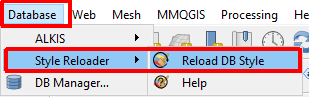
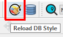
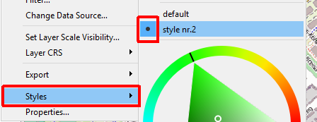
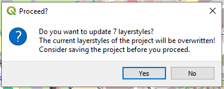

This Plugin reads for all PostgreSQL-layers of the opened QGIS-Project the default-style which is saved in the PostgreSQL database and overwrites the current active style.
You can find it:
in the database menu:
in the database toolbar:
The plugin will overwrite the active style stored inside the current QGIS-Project for these layers.
( The active style for these layers stored in the QGIS-Project does not have to be the default style stored in the QGIS-Project.)

As it is perhaps not wanted to overwrite the current active styles of the QGIS-project there will a prompt before overwriting the styles: